Gallery
 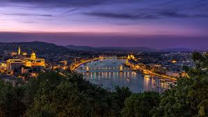
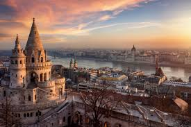
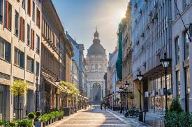
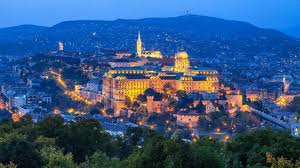
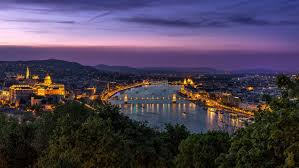
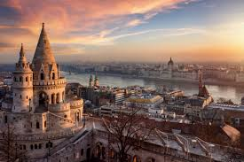
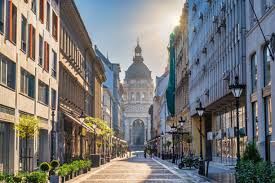
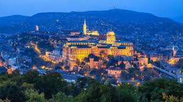
Discover the vibrant capital of Hungary, famous for its thermal baths, history, and stunning architecture.
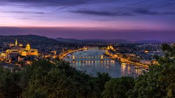
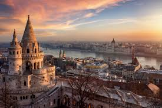
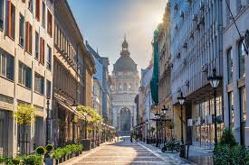
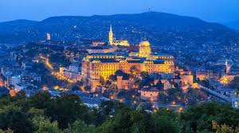
Budapest is Hungary’s capital, split by the Danube River into Buda and Pest. It is known for its thermal baths, vibrant culture, and historical landmarks like Buda Castle, Matthias Church, and the Parliament building. The city blends architectural styles from Gothic to Art Nouveau and offers a rich café culture and lively nightlife.
Enjoy Hungarian classics like goulash, chimney cake (kürtőskalács), langos, and hearty stews. Budapest is also known for its coffee houses and sweet pastries.